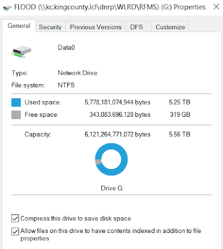
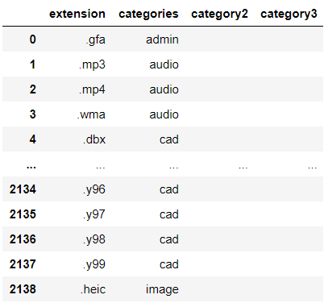
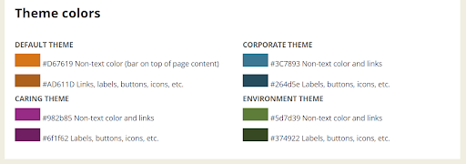
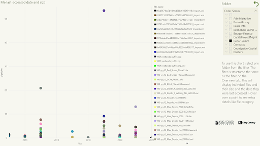

Allowing employees to upload and access files in a shared drive is important to allow collaborative work, especially in environmental organization. The River and Floodplain Management Section needed the ability to share files like images of flood events and analyses of information like downed trees, docks on lakes, and more. Their folder structure was very organized, but with no governance plan in place, employees were unsure of where to upload files and how long to retain them. This led to the shared drive becoming full very quickly. With King County as a whole establishing a new retainment strategy for files, it was now more important to establish a data governance plan. To do that, we would first need to discover what files we had and then create a data catalog of all the information.
For this project, I worked as a data science intern with the River and Floodplain Management Section (RFMS). I worked independently but I was mentored by and had check-ins with a data scientist in the IT department along with a Project Manager from the RFMS. I was in charge of discovering the files in the shared drive and then creating a data catalog for another Manager to implement a data governance plan. I gathered the data using Python and then I organized it further in Excel, which also served as a data catalog. I also created a Power BI dashboard with the Excel Data to help visualize facts about the data and help users find where disposable filers were located.
Since I was the only data scientist in the organization, I had full choice of the process for finding and displaying data. I asked one of the data scientists from IT mentoring me if there were any tools he recommended. I was familiar with some of them, but after doing some of my own research online about their capabilities and costs, I decided to go with Python and Jupyter Notebook. The main reasons I chose Python were due to my familiarity with Python already, it's efficiency with processing and building data sets, and the popularity of it and all the packages available.
To get a better understanding of the information needed to create a data governance plan, I started by researching online. I got a good idea about what file metadata I should obtain to make the process easier, but I wanted to make sure I was meeting the needs of the organization. I set up four user interviews with different managers in the organization, including the one who would be in charge of creating the data governance plan. During the semi-structured interviews, I asked questions like what file-metadata they would like to see, how many levels of folders they would want, and how would they want to display information to the rest of their employees
The interviews helped me learn more about the information I could obtain. One important metric for them was seeing when a file was last accessed. I knew it was possible to see when a file was created or when it was last edited, so I knew I would need to find a way to get the last accessed date since I didn't know that was tracked. I was also surprised to learn that they wanted to visualize the file data to their employees. I assumed they would just want to show a word summary of the data along with the final data governance plan. This came into play later, but this information helped me go on to create a Power BI Dashboard to show the organization. I realized it would be important for everyone to see how the shared drive was being impacted by their files. This would also ensure everyone was on the same page with the data governance plan and why certain decisions would be made, like deleting files that haven't been accessed in a long time.
Now that I knew all the metadata fields we wanted, I found Python functions and packages to obtain them. I created the code in a Jupyter Notebook that anyone could access later on to obtain the data. I had the notebook navigate to the starting point of the shared drive then used a recursive method to go through each file in every folder to get all their metadata.
The file metadata was:
The most complicated part of obtaining and organizing the data was getting the file extensions and then categorizing them, such as putting png, jpg, and raw files as images. After talking to my manager, we decided there would be 6 important file categories overall. I had to run my script on all the files in the drive to see all possible file extensions. I then exported those to see them all and then categorized them in the Python code. There were some file extensions nobody was sure about, so I just flagged those in the category section and excluded them from the data. There were only a couple but we weren't sure how to Categorize them, so I just removed them from the final dataset.
After creating the dataset in Python, I exported it to Excel, which would serve as the data catalog.
From the user interviews, I learned that a lot of the RFMS employees already know how to use Excel. I thought hosting the data catalog in Excel would be the most easiest way for users to utilize it because of their experience and the of accessibility of Excel files in the shared drive. In Excel, I added filters to each column, so in the future, users could filter for things like their organization or the owner of each file.
Another thing I learned from the user interviews was the importance of visualizations. Based on the metadata the interviewees wanted and my prior knowledge of data visualization, I had an idea of what graphs I wanted them to see. I learned that along with Excel, RFMS employees also know how to use Power BI dashboards. I was new to Power BI, so I learned how to use it on my own. Some of the visualizations I created showed where most files were and also what the biggest files were. I knew I wanted to show them the location of the biggest files were so users could easily get to them and either delete them or move them somewhere else. I created a filter that was organized by folder level so individual staff and supervisors could select a folder and keep drilling down.
I wanted the dashboard to be an official tool of the organization, so I followed the company style guide for the fonts and colors used on the dashboard. I made sure to use appropriate branding with the company logos too.
For the 1st dashboard page, I included instructions on how to use the dashboard along with 4 quick-to-view visualizations. I placed the filter and instructions to the left, to make sure the visualizations could be viewed uninterrupted.
From the data and visualizations, we learned that flood events cause a flood of files to the shared drive. 1.07 M files were created in 2019 when the last flood occurred, there was a total of 2 million files so the flood-related ones took up almost half of the drive. File quantity and size start increasing exponentially after 2012 though. Image files were the largest ones and also the most common file category.
For the 2nd dashboard page, I created a visualization to display the largest file in a folder. They could see metadata with the tooltip such as when it was last accessed, which would help users determine if a large file should be deleted or not.
The data catalog and the Power BI dashboard helped increase the storage of the shared drive. A couple of the managers used the tool to determine which folders to target and delete files for. I provided a tree chart also, but my manager and data scientist agreed it wouldn't be as valuable due to the other charts showing more important data. The Largest Files chart was the most helpful in targeting specific files. After some cleaning with the help of the dashboard, the shared drive had an extra TB of free space. The organization was also able to use the tool to help them create the data governance plan and rules.
Overall, I was satisfied with my process and the project. I was able to read all files when gathering the data, but there were some files I didn't have permissions to access and some extensions were missing. Even though I wasn't able to include every single file, I reduced the amount of files I would need to exclude from the data set as much as I could. If I could go back, I would try to conduct some usability tests to make sure the dashboard was helpful for all users who would be in charge of deleting files for their sub-division. With the time I had to work on the project though, I am proud of the work I did with the code, data set, and Power BI dashboard.